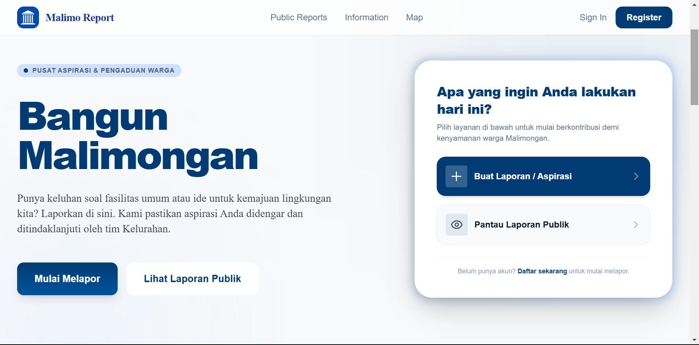
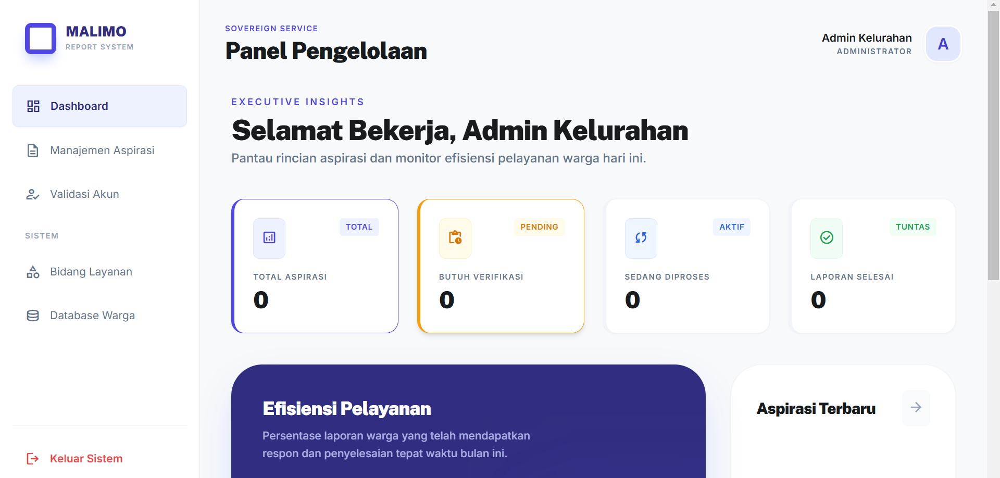

E-Government / Public Service
Malimo Report
2024 Fullstack Platform / Management Pengaduan
Platform pengaduan masyarakat digital yang dirancang khusus untuk Kelurahan Malimongan. Aplikasi ini memoderasi proses komunikasi antara warga dan pemerintah kelurahan, memastikan setiap keluhan terdokumentasi, diproses secara transparan, dan diselesaikan tepat waktu.

Project overview
Malimo Report lahir dari kebutuhan untuk mendigitalisasi layanan pengaduan di tingkat kelurahan yang sebelumnya bersifat manual. Proyek ini berfokus pada kemudahan akses bagi warga dan efisiensi manajemen bagi staf kelurahan.
- Reporting Interface: Antarmuka intuitif bagi warga untuk mengirim laporan secara anonim maupun terdaftar.
- Admin Dashboard: Panel kendali bagi staf kelurahan untuk memverifikasi, menindaklanjuti, dan memantau status laporan.
- Status Tracking: Notifikasi dan visualisasi status laporan (Baru, Diproses, Selesai) secara real-time.
- Community Branding: Desain yang ramah dan inklusif untuk mendorong partisipasi aktif masyarakat.
Key Features
Sistem ini dibangun dengan mengutamakan skalabilitas dan keamanan data masyarakat.
- Autentikasi aman menggunakan Laravel Breeze.
- Manajemen kategori pengaduan yang dinamis.
- Upload lampiran (foto/dokumen) sebagai pendukung laporan.
- Sistem komentar untuk dialog interaktif antara admin dan pelapor.
- Dashboard statistik untuk melihat tren keluhan di kelurahan.

Tech stack
Frontend
- Blade Templates
- Tailwind CSS
- Vite (Bundler)
Backend
- Laravel 12
- MySQL Database
- Eloquent ORM
Links
Akses kode sumber dan dokumentasi project.
- Repository GitHub: laravel-project-management-pengaduan-system